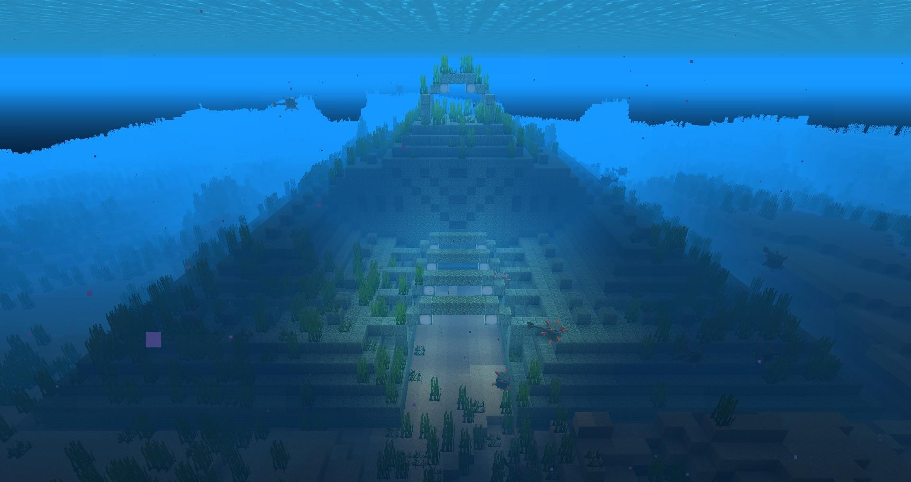
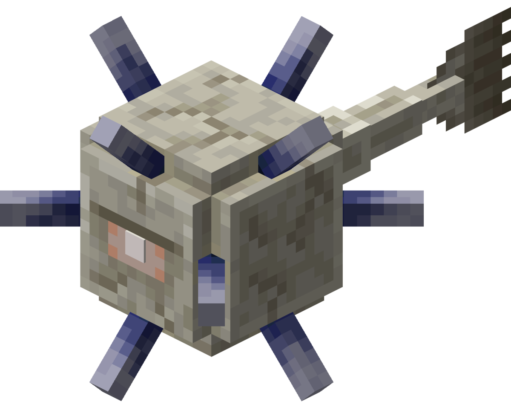
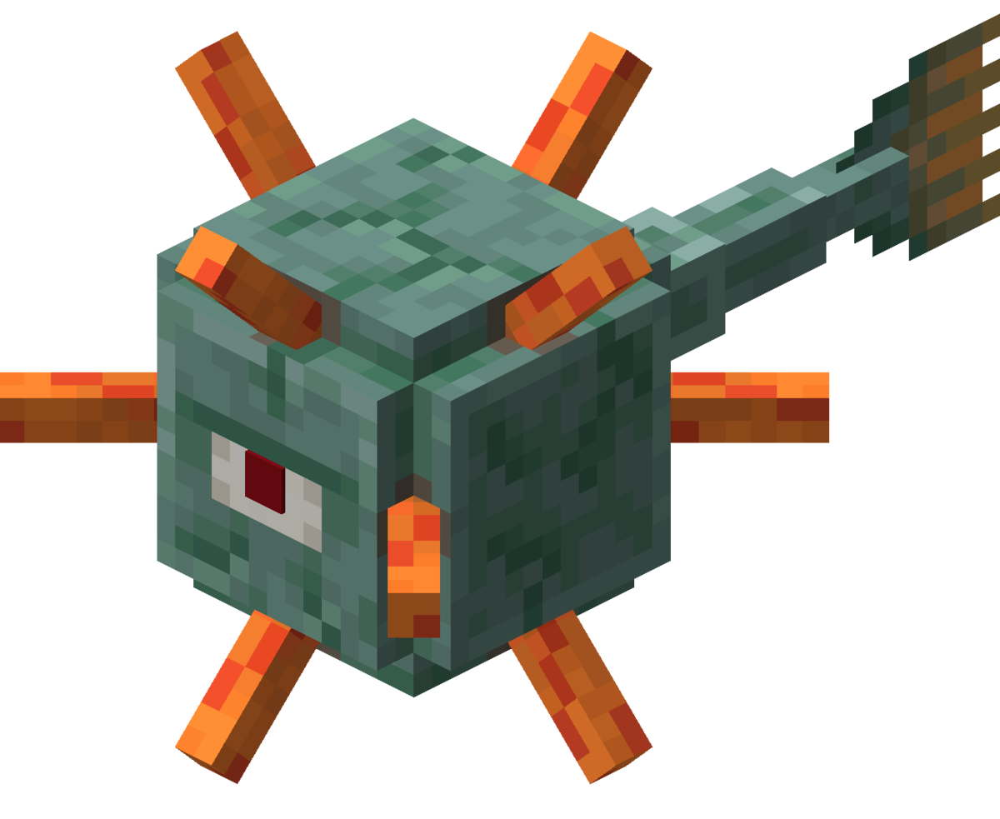
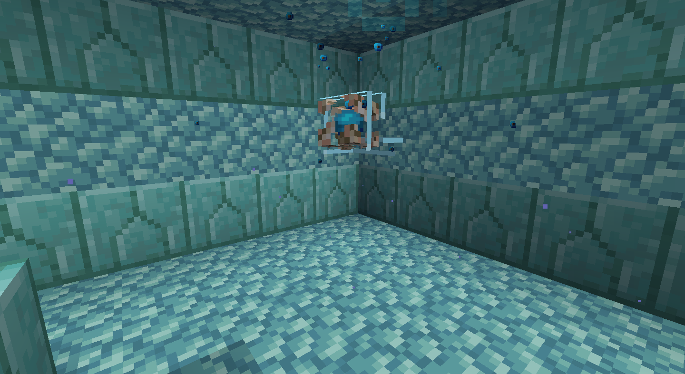

Welcome to The Ocean Monument Guide!
This guide will teach you how to defeat an ocean monument, and how to do it safely!

If you dont know what an ocean monument is here's a quick overview, an ocean monument is an underwater temple mabe out of prismarine and protected by guardians,
there are two types of guardians, the elder guardians and guardians.
Elder guardians are very strong and can kill a unarmored player in two hits. They also can inflict mining fatigue. There are three elder guardians per monument.

Guardians spawn above Ylvl thirty. And they deal two hearts of damage per hit to a unarmored player. Also when their spikes are out don't hit them because they have some thorns damage.

Now why do you want to defeat an ocean monument? You want to defeat an ocean monument because you probably want some of the cool blocks they contain, such as prismarine, prismarine bricks, dark prismarine, sea lanterns, sponges and maybe some gold blocks.
Now the supplies you should have:
- Good armor at least diamond
- A trident enchanted with impaling and loyalty
- A pickaxe that is enchanted with silk touch
- A conduit, doors or some water breathing potions
- A boat to sail over it
- A milk bucket (optional)
Method:
To defeat the ocean monument you need to sail your boat over the entrance and then dive into the front, avoid the guardians and once you reach the entrance you can drink a water breathing potion or place a door and breath inside of it. find a corner and place your conduit (if you chosse that route) as shown:

Now go find the three elder guardians and kill them. After that drink your milk, (if you brought any!) and if you did not you will have to wear off the mining fatigue. once it wears off, you can collect any of the blocks you want or you could even drain it and turn it into a base!